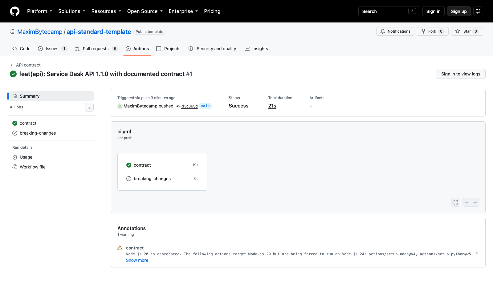

Справочник «Стандартизация HTTP API» · модуль 6 · Стандарт и его проверка
Глава 6.4
CI и поиск
breaking changes
Проверки есть, но польза от них появляется только тогда, когда их нельзя обойти. Соберём линтер, тесты и сравнение версий в одну сборку, запустим её на каждом изменении и запретим объединять изменение, пока она красная. С этого момента стандарт перестаёт зависеть от того, кто сегодня смотрит pull request.
«Проверка, которую можно пропустить, рано или поздно будет пропущена — обычно перед выходными.»
- Категория
- Стандарт
- Уровень
- Средний
- Связанные главы
- 6.2 Линтер · 6.3 Тесты · 5.2 Breaking changes · 7.1 Шаблон pull request
- Зачем это знать
- Чтобы контракт защищался автоматически, а не силой воли команды
§1Что такое сборка контракта
CI — непрерывная интеграция: набор проверок, который запускается сам при каждом изменении. В учебном проекте это один файл .github/workflows/ci.yml и две задачи внутри него.
name: API contract
on:
push:
branches: [main]
pull_request:Проверка того, что в основной ветке всё в порядке. Значок состояния в README показывает именно её.
Главный случай: изменение проверяется до того, как попадёт в основную ветку.
Разница принципиальная. Проверка после объединения сообщает, что контракт уже сломан; проверка до — не даёт сломать.
§2Задача contract: четыре проверки
jobs:
contract:
runs-on: ubuntu-latest
steps:
- uses: actions/checkout@v5
- uses: actions/setup-python@v5
with:
python-version: "3.12"
- name: Install dependencies
run: pip install -r requirements.txt
- name: Contract and behaviour tests
run: pytest
- name: OpenAPI files match the code
run: python scripts/export_openapi.py --check
- uses: actions/setup-node@v4
with:
node-version: "22"
- name: Spectral lint
run: npx --yes @stoplight/spectral-cli@6.16.3 lint openapi/openapi.yaml --fail-severity=warnpython 3.12, node 22, spectral 6.16.3, действия по номеру. Сборка не должна падать из-за чужого выпуска.предсказуемостьПорядок шагов выбран не случайно: сначала быстрые тесты, потом сверка файла, и только затем установка Node.js для линтера. Если контракт сломан, сборка сообщит об этом через несколько секунд, не тратя время на установку лишнего.
§3Задача breaking-changes
Вторая задача сравнивает контракт из pull request с контрактом в основной ветке — тем самым oasdiff, который мы запускали вручную в главе 5.2.
breaking-changes:
if: github.event_name == 'pull_request'
runs-on: ubuntu-latest
permissions:
contents: read
steps:
- uses: actions/checkout@v5
- run: git fetch --depth=1 origin ${{ github.base_ref }}
- name: oasdiff breaking
uses: oasdiff/oasdiff-action/breaking@v0.1.17
with:
base: "origin/${{ github.base_ref }}:openapi/openapi.yaml"
revision: "HEAD:openapi/openapi.yaml"
fail-on: ERR
review: falseВот ответ на вопрос из главы 3.1: сравнивать «то, что было» и «то, что стало», можно только если обе версии лежат в истории. Если описание существует лишь в памяти запущенного сервиса, сравнить его в pull request не с чем.
§4Как сравниваются две версии контракта
- Разработчик меняет код и заново выгружает описание:
python scripts/export_openapi.py. - Открывает pull request. В изменении видны и код, и новое описание — рядом, одним списком правок.
- Сборка достаёт две версии файла
openapi/openapi.yaml: из основной ветки и из изменения. - oasdiff сравнивает их по своему набору правил и печатает список несовместимых изменений.
- Есть ошибки — задача красная, и объединить изменение нельзя, пока автор не вернёт совместимость или не выпустит новую мажорную версию.
Обратите внимание на шаг 2: описание попадает в pull request как обычный текстовый файл, и его правки видны так же, как правки кода. Ревьюер читает не «добавлено поле в модель», а «в ответе появилось поле priority типа string» — и может обсуждать контракт, а не реализацию.
§5Зелёная сборка


§6Красная сборка: настоящий случай
Проверим, что защита работает. В учебном репозитории было открыто изменение, в котором из схемы обращения убрано обязательное поле title — то самое несовместимое изменение из главы 5.2.

breaking-changes: сравнение нашло несовместимые изменения. Задача contract при этом может быть зелёной — тесты и линтер о совместимости с прошлой версией ничего не знают.4 changes: 4 error, 0 warning, 0 info
error [response-required-property-removed]
in API GET /api/v1/tickets
removed the required property `items/items/title` from the response with the `200` status
…Разработчик видит это в самом pull request, до объединения. Дальше у него три пути: вернуть поле, признать изменение мажорным и выпускать /api/v2, либо переделать в устаревание из главы 5.3. Ни один из путей не включает «объединить и посмотреть, что будет».
Она означает, что проверка сработала до того, как что-то сломалось у клиентов. Плохая новость — это зелёная сборка на сломанном контракте, и как раз её предотвращают, дописывая тесты и правила.
§7Защита ветки
Сборка сама по себе ничего не запрещает — она только сообщает. Запрещает настройка репозитория: защита основной ветки.
contract и breaking-changes не зелёные.зелёное или ничегоCODEOWNERS назначает обязательного ревьюера на изменения контракта. Подробно — глава 7.2.кто смотритВсе четыре настройки вместе дают простое свойство: нельзя изменить контракт, не пройдя проверок и не показав изменение человеку. Без защиты ветки всё предыдущее — добровольное упражнение.
§8Сколько это стоит по времени
| Проверка | Время | Что ловит |
|---|---|---|
pytest | доли секунды | Расхождение поведения и обещаний |
export_openapi.py --check | доли секунды | Устаревший файл описания |
| Spectral | секунды плюс установка Node.js | Нарушения стиля в описании |
| oasdiff | секунды | Несовместимые изменения |
Дороже всего обходится не выполнение проверок, а установка окружения. Отсюда обычный приём: тесты и сверку файла запускают и локально перед отправкой изменения, а полный набор — в сборке. Чем раньше проверка сработала, тем дешевле исправление: замечание линтера в своём редакторе стоит минуту, то же замечание после объединения — час чужого времени.
§9Частые ошибки
breaking-changes становится невозможен.§10Проверьте себя
- Чем проверка при pull request принципиально отличается от проверки после объединения?
- Назовите четыре шага задачи
contractи скажите, что ловит каждый. - Почему задача
breaking-changesне запускается при push в основную ветку? - Почему для сравнения версий контракта файл описания обязан лежать в репозитории?
- Задача
contractзелёная, аbreaking-changesкрасная. Что это означает и что делать автору? - Какие четыре настройки защиты ветки нужны, чтобы контракт нельзя было изменить в обход?
contract — при каждом измененииbreaking-changes — только в PRpytestexport_openapi.py --checkspectral lintbase — целевая веткаrevision — изменениеfail-on: ERRтолько через PRобязательные проверкиобязательное одобрениеCODEOWNERSСправочник «Стандартизация HTTP API» · модуль 6 · глава 6.4Макаров Максим Николаевич